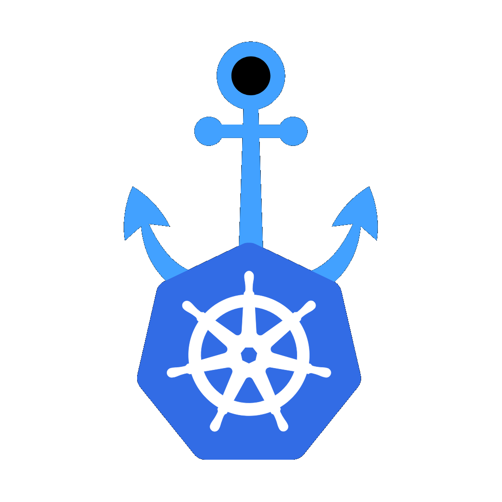

Scaling Machine-to-Machine Communication: Resolving WebSocket Session Affinity in GKE

Executive Summary
In high-concurrency automated environments, maintaining persistent, sticky connections between client workers and stateful container instances is a critical architectural requirement. When Foxchemy — an agentic AI-powered e-commerce platform — scaled its automated checkout infrastructure, it encountered severe routing instability. Standard Google Kubernetes Engine (GKE) Ingress controllers failed to maintain session affinity for machine-to-machine WebSocket connections. This resulted in fragmented routing, orphaned "zombie" browser processes, and severe resource leaks.
Foxchemy engineered a resilient, high-throughput "browser-farm" architecture. Working hands-on with Foxchemy's platform engineering team, I helped them through every stage — from reproducing the routing failures in a staging cluster, to designing and implementing the fix, all the way to validating it under real production load. By combining direct Pod-IP discovery, custom NGINX protocol normalization, connection-driven Horizontal Pod Autoscaling (HPA), and Google Cloud Armor edge security, we eliminated WebSocket routing failures, reduced egress network payload costs by 94%, and achieved true zero-downtime scale-down capabilities.
In high-concurrency automated environments, maintaining persistent, sticky connections between client workers and stateful container instances is a critical architectural requirement. When Foxchemy — an agentic AI-powered e-commerce platform — scaled its automated checkout infrastructure, it encountered severe routing instability. Standard Google Kubernetes Engine (GKE) Ingress controllers failed to maintain session affinity for machine-to-machine WebSocket connections. This resulted in fragmented routing, orphaned "zombie" browser processes, and severe resource leaks.
Foxchemy engineered a resilient, high-throughput "browser-farm" architecture. Working hands-on with Foxchemy's platform engineering team, I helped them through every stage — from reproducing the routing failures in a staging cluster, to designing and implementing the fix, all the way to validating it under real production load. By combining direct Pod-IP discovery, custom NGINX protocol normalization, connection-driven Horizontal Pod Autoscaling (HPA), and Google Cloud Armor edge security, we eliminated WebSocket routing failures, reduced egress network payload costs by 94%, and achieved true zero-downtime scale-down capabilities.
Quick links
1. Business & Technical Challenge
1.1 The Agentic E-Commerce Vision
Foxchemy's platform relies on autonomous AI agents that act on behalf of users to navigate e-commerce storefronts, manage cart states, and execute faster checkout flows. To perform these tasks reliably without relying on brittle third-party APIs, the backend orchestrates a massive "browser-farm" consisting of headless Google Chrome instances running inside containerized environments.
Foxchemy's platform relies on autonomous AI agents that act on behalf of users to navigate e-commerce storefronts, manage cart states, and execute faster checkout flows. To perform these tasks reliably without relying on brittle third-party APIs, the backend orchestrates a massive "browser-farm" consisting of headless Google Chrome instances running inside containerized environments.
1.2 The "Split-Brain" WebSocket Routing Crisis
Each automated session requires a long-lived, bi-directional WebSocket connection via the Chrome DevTools Protocol (CDP). During initial production scaling on GKE, the infrastructure experienced a critical failure pattern:
Each automated session requires a long-lived, bi-directional WebSocket connection via the Chrome DevTools Protocol (CDP). During initial production scaling on GKE, the infrastructure experienced a critical failure pattern:
- Round-Robin Ingress Misalignment: The standard GKE Ingress controller distributed incoming WebSocket upgrade requests using standard L7 round-robin balancing. When an execution worker attempted to attach to an active session, the load balancer frequently routed the WebSocket handshake to a different Pod than the one hosting the initialized Chrome process.
- Orphaned "Zombie" Sessions: The target Pod would reject the unrecognized session ID, returning 502 Bad Gateway or 404 Not Found errors. Meanwhile, the original Chrome instance remained running in an unmanaged state, consuming memory and vCPU indefinitely.
- Resource Exhaustion & Cascading Outages: As orphan processes accumulated, GKE nodes hit Memory Out-Of-Memory (OOMKilled) limits, triggering node crashes and severing unrelated, active user checkouts.
[FAILED ROUTING STATE]
Executor Service ---> K8s Ingress (Round-Robin) ---> Pod A (Session Initiated)
---> Pod B (WS Connect -> 502 Bad Gateway)
(Pod A becomes an orphaned "Zombie" process)
2. The Architectural Solution
To resolve the routing crisis and establish a foundation for global scale, I collaborated closely with Foxchemy's engineers to design a multi-tiered architecture centered on Direct Pod Discovery, Header Consistent Hashing, and Asynchronous Workload Decoupling.
+-----------------------------------------------------------------------------------+
| GCP VPC NETWORK |
| |
| +-------------------+ 1. Fetch Healthy IPs +--------------------------------+ |
| | Execution Service | ---------------------> | Compute Engine API / Discovery | |
| +-------------------+ <--------------------- +--------------------------------+ |
| | 2. Return Pod IPs |
| | |
| | 3. Direct Pod Connection (--proxy-server=10.x.x.x) |
| v |
| +-----------------------------------------------------------------------------+ |
| | GKE CLUSTER (us-central1) | |
| | | |
| | +---------------------------------------------------------------------+ | |
| | | Browser-Farm Pod | | |
| | | | | |
| | | +------------------+ +------------------+ +-----------+ | | |
| | | | Headless Chrome | <-> | Local NGINX Proxy| <-> | Downward | | | |
| | | | (CDP Port 9222) | | (Protocol Norm.) | | API / IP | | | |
| | | +------------------+ +------------------+ +-----------+ | | |
| | +---------------------------------------------------------------------+ | |
| +-----------------------------------------------------------------------------+ |
+-----------------------------------------------------------------------------------+
2.1 Pod-Level Discovery & Downward API Injection
To bypass Layer 7 load balancers that strip connection stickiness, I leveraged the Kubernetes Downward API to inject Pod metadata (POD_IP, POD_NAME) directly into the container environment.
A custom background daemon (start-chrome.sh) continuously intercepts local Chrome DevTools endpoints (/json/list), dynamically rewriting ws://localhost:9222 to the Pod's fully qualified internal Pod IP (ws://10.x.x.x:9222). The execution engine queries these rewritten endpoints, forcing the WebSocket handshake to terminate directly at the exact Pod hosting the target browser.
To bypass Layer 7 load balancers that strip connection stickiness, I leveraged the Kubernetes Downward API to inject Pod metadata (POD_IP, POD_NAME) directly into the container environment.
A custom background daemon (start-chrome.sh) continuously intercepts local Chrome DevTools endpoints (/json/list), dynamically rewriting ws://localhost:9222 to the Pod's fully qualified internal Pod IP (ws://10.x.x.x:9222). The execution engine queries these rewritten endpoints, forcing the WebSocket handshake to terminate directly at the exact Pod hosting the target browser.
2.2 NGINX Header Hashing & GCLB Cookie Affinity
For external control interfaces and HTTP-based triggers, session stickiness was enforced at the ingress boundary using two complementary strategies:
For external control interfaces and HTTP-based triggers, session stickiness was enforced at the ingress boundary using two complementary strategies:
- Header-Based Consistent Hashing: Configured NGINX Ingress annotations (upstream-hash-by: "$http_x_cartai_id") to map client session identifiers onto a 32-bit consistent hashing ring, guaranteeing that HTTP calls with matching headers route to the same Pod.
- GCLB Cookie Management: For public endpoints routed via Google Cloud External HTTP(S) Load Balancers, cookie-based affinity (Set-Cookie: GCLB=...) was enabled with extended backend timeouts (timeoutSec: 3600) to keep long-lived WebSocket tunnels active.
2.3 Decoupled Event Pipeline (Pub/Sub + Redis + KEDA)
To protect execution Pods from sudden traffic bursts, monolithic HTTP endpoints were split into an asynchronous, queue-driven architecture:
To protect execution Pods from sudden traffic bursts, monolithic HTTP endpoints were split into an asynchronous, queue-driven architecture:
- Ingress Layer: Accepts checkout triggers, publishes tasks to Google Cloud Pub/Sub, and returns an instant 202 Accepted response.
- Buffer Layer: Redis manages ephemeral state and real-time session tracking.
- Worker Layer: Worker Pods pull tasks from the queue based on strict capacity rules (maximum 2 heavy tasks per Pod).
- Autoscaling: KEDA (Kubernetes Event-driven Autoscaling) monitors queue depth, scaling worker Pods proactively before system resource exhaustion occurs.
3. Advanced Autoscaling & Zero-Downtime Lifecycle Management
3.1 The Failure of CPU/Memory HPA
Traditional Kubernetes Horizontal Pod Autoscalers (HPA) rely on CPU and RAM utilization metrics. In a browser automation farm, this model fails:
Traditional Kubernetes Horizontal Pod Autoscalers (HPA) rely on CPU and RAM utilization metrics. In a browser automation farm, this model fails:
- Chrome instances maintain persistent WebSocket connections that consume low CPU while idle between execution steps.
- When a Pod reaches maximum session capacity, Chrome rejects new incoming debugger requests even if system CPU usage remains well within green thresholds.
3.2 Connection-Driven HPA
I implemented custom metric autoscaling based on active NGINX WebSocket connections derived from the NGINX stub_status module:
Active Sessions Per Pod = nginx_active_connections
I implemented custom metric autoscaling based on active NGINX WebSocket connections derived from the NGINX stub_status module:
Active Sessions Per Pod = nginx_active_connections
apiVersion: autoscaling/v2
kind: HorizontalPodAutoscaler
metadata:
name: browser-farm-hpa
spec:
scaleTargetRef:
apiVersion: apps/v1
kind: Deployment
name: browser-farm
minReplicas: 3
maxReplicas: 20
metrics:
- type: Pods
pods:
metric:
name: nginx_active_connections
target:
type: AverageValue
averageValue: 1
3.3 Graceful Shutdown via PreStop Hooks
To prevent the autoscaler from terminating Pods mid-checkout during scale-down events, a multi-stage shutdown protocol was deployed:
To prevent the autoscaler from terminating Pods mid-checkout during scale-down events, a multi-stage shutdown protocol was deployed:
- HPA Scale-Down Delay: A 300-second stabilization window (stabilizationWindowSeconds: 300) prevents rapid infrastructure thrashing.
- PreStop Lifecycle Script: When Kubernetes flags a Pod for deletion, the Pod's Endpoint IP is instantly removed from the service directory (blocking new requests). Simultaneously, a preStop hook executes inside the container, polling active TCP sockets on port 9222.
- Guaranteed Task Completion: The Pod effectively "refuses to die" until all active WebSocket sessions finish naturally, ensuring zero mid-execution failures.
lifecycle:
preStop:
exec:
command: ["/bin/sh", "-c", "while [ $(ss -tan | grep :9222 | grep ESTABLISHED | wc -l) -gt 0 ]; do sleep 5; done"]
4. Geo-Distributed IP Emulation & Edge Security
4.1 Regional Proxy Fleets (MIGs + Tinyproxy)
E-commerce target sites aggressively block high-volume traffic coming from known Google Cloud datacenter IP ranges (ASN 15169). To bypass regional blocks and rate-limits, a self-managed "Hub-and-Spoke" proxy infrastructure was established:
E-commerce target sites aggressively block high-volume traffic coming from known Google Cloud datacenter IP ranges (ASN 15169). To bypass regional blocks and rate-limits, a self-managed "Hub-and-Spoke" proxy infrastructure was established:
- Managed Instance Groups (MIGs): Deployed lightweight e2-micro Compute Engine instances across target international regions (e.g., India, Europe, US).
- Automated IP Refresh: If a target vendor flags an IP pool, an automated rolling replace command (gcloud compute instance-groups managed rolling-action replace) destroys the VM pool and provisions fresh Compute instances with clean public IPs within minutes.
- VPC Private Routing: Internal traffic between GKE Pods in us-central1 and regional proxy VMs flows securely over Google's global private backbone network.
4.2 Edge Hardening & API Gateway
- GCP API Gateway: Serves as the public entry point (ee-api-qa), restricting public routes via API keys and securing internal administrative routes using Google Service Account JWT impersonation.
- Cloud Armor WAF: Deployed Web Application Firewall policies enforcing OWASP top 10 protection, automated bot/scanner blocking, and strict IP rate limiting (50 requests / 2 minutes per IP).
5. FinOps & Data Egress Optimization
Because browser automation involves loading asset-heavy e-commerce pages (HTML, JS, CSS, images), moving raw DOM data across cloud zones and external API boundaries can incur significant networking charges.
I worked directly with Foxchemy's SREs to conduct a comprehensive data flow analysis, optimizing the payload lifecycle before passing data to external Large Language Models (LLMs):
I worked directly with Foxchemy's SREs to conduct a comprehensive data flow analysis, optimizing the payload lifecycle before passing data to external Large Language Models (LLMs):
+-----------------------------------------------------------------------------------+
| OPTIMIZED DATA EGRESS FLOW |
| |
| Target E-Commerce Site ---> Ingress to Regional Proxy (18 MB) [FREE] |
| | |
| v Internal Egress ($0.01/GB) |
| Browser Farm Container |
| | |
| v Local Filtering & DOM Parsing |
| Cleaned Output (1 MB) |
| | |
| v External Egress ($0.12/GB) |
| External LLM API |
+-----------------------------------------------------------------------------------+
Data Flow Cost Optimization Summary
- Heavy Ingress is Free: Ingesting 18 MB of raw website data from target sites into the regional proxy incurs $0.00 in Google Cloud network charges.
- Internal Data Transfer is Minimal: Moving full page payloads internally from Proxy to Browser containers costs $0.01/GB.
- Payload Reduction Before LLM Transmission: Raw DOMs (18 MB) are parsed and stripped locally inside the container, extracting only structured JSON and essential screenshots (1 MB) prior to calling external LLM APIs.
- Financial Impact: Reduced outbound network payloads by 94%, slashing monthly external egress costs from ~$93.00 per 1,000 runs down to ~$5.16.
6. Key Achievements & Impact
| Metric / Objective | Before Implementation | After Implementation |
|---|---|---|
| WebSocket Session Stability | Frequent 502 Bad Gateway & orphaned zombie sessions | 100% Session Continuity via direct Pod IP discovery & header affinity |
| Scale-Down Reliability | Active checkouts killed abruptly during HPA scale-downs | Zero Mid-Session Disconnects via connection HPA & preStop hooks |
| IP Block Resolution | Blocked by target anti-bot systems on GCP ASNs | Dynamic Regional Egress via automated MIG proxy rotations |
| Egress Network Efficiency | 18 MB uncompressed DOM sent to LLMs ($0.12/GB) | 1 MB Filtered Payload (94% cost reduction) |
| Edge Security Posture | Exposed public endpoints | Cloud Armor WAF + API Gateway JWT Auth |
7. Conclusion
By shifting away from monolithic HTTP architectures and rigid Layer 7 load balancing, Foxchemy built a resilient, event-driven automation platform. The combination of dynamic Pod discovery, custom NGINX session affinity, connection-based autoscaling, and proactive FinOps modeling ensures that Foxchemy can scale its agentic AI checkout platform globally with high availability, robust security, and optimal cost efficiency.
This project was a deeply collaborative effort — Foxchemy's engineers brought deep product and browser-automation knowledge, and I contributed the GKE, networking, and FinOps expertise to translate their vision into a production-grade system. Watching the platform scale to thousands of concurrent sessions without a single routing failure was incredibly rewarding, and it reinforced how much impact a strong engineer-vendor partnership can have.
This project was a deeply collaborative effort — Foxchemy's engineers brought deep product and browser-automation knowledge, and I contributed the GKE, networking, and FinOps expertise to translate their vision into a production-grade system. Watching the platform scale to thousands of concurrent sessions without a single routing failure was incredibly rewarding, and it reinforced how much impact a strong engineer-vendor partnership can have.

© Copyright 2024. All right Reserved.